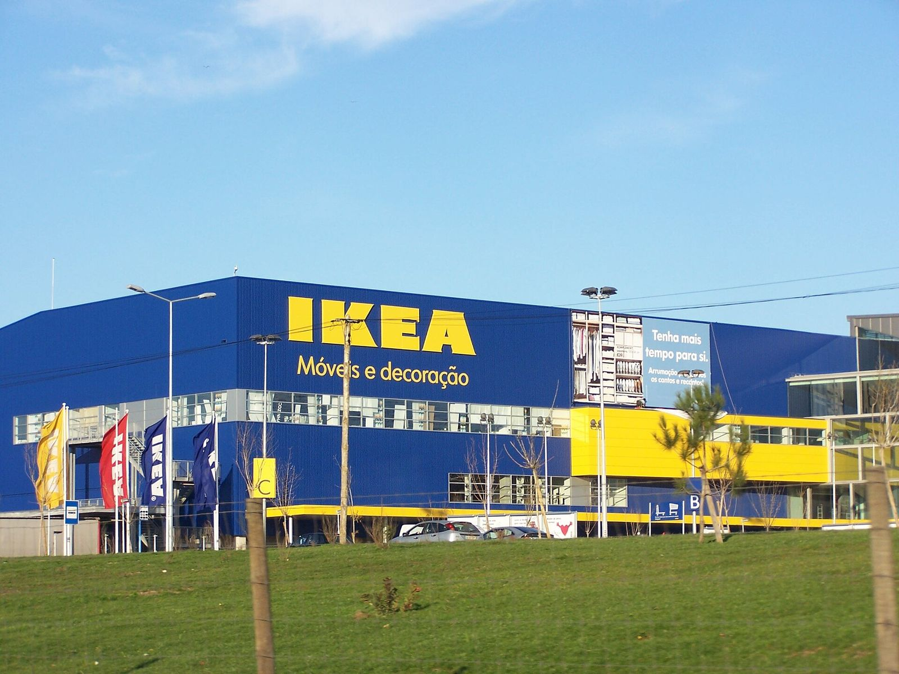
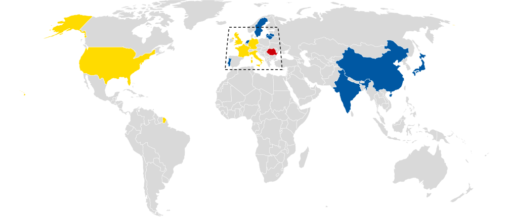
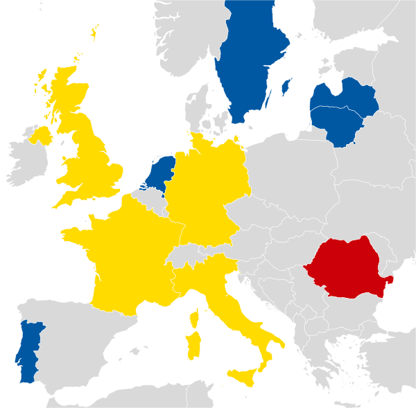

A casa e a «saudade»
A comunicação do IKEA em Portugal passou a apelar à ligação à casa e à «saudade» típica portuguesa.
Um trabalho escolar sobre o IKEA como marca global: o que é igual em todo o mundo e o que muda em cada país.
Trabalho escolar sem fins comerciais. Não é um site oficial nem tem ligação ao IKEA.

Estudo de Caso 1 · Marcas Globais
Como uma marca sueca de 1943 padroniza o essencial e muda só o que cada país exige.
Começar«Como consegue esta marca manter uma identidade global e, simultaneamente, adaptar-se aos mercados locais?»
Ver a nossa respostaPonto 1 · Identidade e percurso
Marca sueca de mobiliário e artigos para a casa, desde 1943
O IKEA é uma marca sueca de mobiliário e artigos para a casa, criada em 1943 por Ingvar Kamprad. Hoje funciona como um sistema de franquia repartido por várias empresas.
Ver a linha cronológicaA comunicação do IKEA em Portugal passou a apelar à ligação à casa e à «saudade» típica portuguesa.
Com a agência Rethink, o IKEA Canadá satiriza o tom pretensioso dos anúncios de marcas de luxo.
Ponto 2
O IKEA vende sobretudo na Europa, mas fabrica, compra e distribui a partir de muitos países. O retalho está sobretudo no Ingka Group; a marca e o conceito pertencem ao Inter IKEA Group. Cada número abaixo indica de qual dos dois vem.
% das vendas do Ingka Group, FY25
Fonte: Ingka, Annual Summary FY25. Portugal: estimativa do grupo a partir da ECO (16 out. 2025).
% das vendas do Ingka Group, FY25
Fonte: Ingka, Annual Summary FY25.
Três mercados comparados · indicador: % das vendas do Ingka (FY25)
A Alemanha (15,4%) é o maior mercado, à frente dos Estados Unidos (12,6%) e da França (9,0%). Juntos valem 37,0% das vendas do Ingka. Dois dos três são europeus, o que confirma o peso da Europa (73,8%); Portugal fica muito atrás, com cerca de 1,6%.
Fonte: Ingka, Annual Summary FY25. Soma e percentagem de Portugal: cálculo do grupo.Carregue nos pontos para ver os dados de cada local. A Europa aparece ampliada num segundo mapa.


Legenda
Mapa elaborado pelo grupo. Fontes dos dados geográficos: coluna «Fonte» da tabela abaixo. Base cartográfica: Natural Earth (domínio público); projeções Natural Earth (mundo) e Mercator (Europa).
Leitura do mapa
A marca e as sedes estão concentradas no Norte da Europa (Älmhult, Delft e Leiden). A produção, a logística e as matérias-primas aparecem noutros países europeus e na Ásia, onde há matéria-prima (florestas da Letónia), tradição industrial (Paços de Ferreira) ou regras que obrigam a comprar localmente (Índia). Os cinco principais mercados ficam na Europa Ocidental e nos Estados Unidos: o IKEA vende sobretudo onde estão os seus clientes, com 73,8% das vendas do Ingka na Europa (FY25).
| Local | Tipo | Atividade | Fonte |
|---|
Ponto 3
O IKEA mantém o nome, o conceito de design acessível e a maior parte da gama, e adapta o formato da loja, os preços, a comida e a comunicação a cada país.
| Portugal | Índia |
|---|
Leitura do grupo: em Portugal, a presença é mais antiga e maior (desde 2004, com 6 lojas e uma fábrica que exporta para 21 países), e a adaptação nota-se sobretudo na comunicação e no formato das lojas. Na Índia, a presença é recente (2018), mas a adaptação é maior: mudam o menu, os preços e parte da gama. A nossa hipótese: quanto mais diferentes são os hábitos e os rendimentos, mais o IKEA adapta.
Quanto é local?
da gama do IKEA Índia é adaptada ao mercado local, segundo uma responsável da empresa.
Fonte: India Retailing. Declaração da empresa: confirmar com fonte independente.Contraprova
O IKEA entrou no Japão em 1974, saiu ao fim de 12 anos e voltou em 2006 com foco em móveis para casas pequenas.
Fonte: The LocalPonto 4
O IKEA traz emprego e produção para Portugal, mas é criticado por organizações ambientais pela origem da madeira. Um balanço justo apresenta as duas coisas e a resposta da empresa.
postos de trabalho diretos em Portugal: 3 200 no retalho e 1 500 na IKEA Industry.
Em Paços de Ferreira, a fábrica compra placas de MDF à Sonae Arauco e exporta 96% da produção.
Matiz: segundo o projeto europeu URBACT, o IKEA compra madeira e outras matérias-primas a empresas locais, mas alguns negócios da cidade foram afetados pelo «fenómeno IKEA».
Fontes: ECO, 15 nov. 2025; URBACTDois relatórios ligaram o IKEA a abates destrutivos em florestas antigas da Europa, em especial na Roménia.
Resposta da empresa: o Inter IKEA disse que a sua análise não encontrou irregularidades e que as práticas de aprovisionamento são legais.
Sobre condições de trabalho, o IKEA comentou um relatório do sindicato holandês FNV sobre fornecedores na Índia, na Bulgária e no Vietname, dizendo que a maior parte das conclusões confirmava as suas próprias auditorias.
Fontes: Mongabay, abr. 2024; SOMO (ano por confirmar)Conclusão do grupo · resposta à pergunta do desafio
«Como consegue esta marca manter uma identidade global e, simultaneamente, adaptar-se aos mercados locais?»
O nome, o design acessível, a maior parte da gama, o modelo de franquia e a produção em grande escala em poucos locais, como Paços de Ferreira.
O formato das lojas (Coimbra), os preços e a comida (Índia) e a comunicação (Portugal).
A gama local ronda 5% a 10% na Índia (India Retailing) e 96% da produção de Paços de Ferreira é exportada (ECO).
A maior parte dos dados sobre a Índia é de 2018 e vem de declarações da empresa e da imprensa; não encontrámos dados atualizados sobre a gama local por país.
Ponto 5
| Título | Entidade / autoria | Data | Tipo | Ligação |
|---|
Ligações consultadas a 29 out. 2026 e verificadas a 16 nov. 2026. Outras fontes citadas ao longo do trabalho: Wikipédia, The Local, Pamono, Business Today, Postal, India Retailing, PYMNTS, Oman Observer (AFP), URBACT, SOMO, Rethink e El Publicista (vídeo no YouTube).
As ligações e os valores principais (vendas, trabalhadores, lojas e datas) foram verificados a 16 nov. 2026.
Nota final